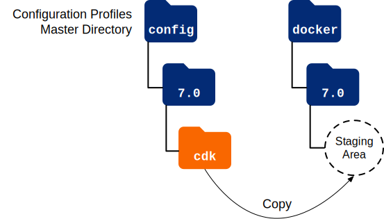

CDM Deployment
Now that you’ve set up your deployment environment following the instructions in
the Environment Setup section for your cloud platform, you’re ready to deploy
the CDM. This page shows you how to deploy the CDM in your
Kubernetes cluster using artifacts from the forgeops repository.
Perform the following procedure:
-
Initialize the staging area for configuration profiles with the canonical CDK configuration profile [1] for the ForgeRock Identity Platform:
$ cd /path/to/forgeops/bin $ ./config.sh init --profile cdk --version 7.0
The
config.sh initcommand copies the canonical CDK configuration profile from the master directory for configuration profiles to the staging area:For more information about the management of ForgeRock Identity Platform configuration profiles in the
forgeopsrepository, see Configuration Profiles. -
Change to the
/path/to/forgeopsdirectory and execute theskaffold runcommand:$ cd /path/to/forgeops $ skaffold run -p small
-
Make the
prodnamespace your current namespace:$ kubens prod
-
Check the status of the pods in the
prodnamespace until all the pods are ready:-
Run the
kubectl get podscommand:$ kubectl get pods NAME READY STATUS RESTARTS AGE admin-ui-555d9f5b9d-qlhvk 1/1 Running 0 3m59s am-7857c7676c-gjwlj 1/1 Running 0 3m58s amster-4qzwm 1/1 Running 0 3m57s ds-cts-0 1/1 Running 0 3m58s ds-cts-1 1/1 Running 0 2m32s ds-cts-2 1/1 Running 0 2m1s ds-idrepo-0 1/1 Running 0 3m58s ds-idrepo-1 1/1 Running 0 2m24s ds-idrepo-2 1/1 Running 0 107s end-user-ui-f6594c6f9-dcfvz 1/1 Running 0 3m58s idm-0 1/1 Running 0 3m58s ldif-importer-4gbdl 0/1 Completed 0 3m56s login-ui-76d4444b84-j4j5s 1/1 Running 0 3m58s
-
Review the output. Deployment is complete when:
-
All entries in the
STATUScolumn indicateRunningorCompleted. -
The
READYcolumn indicates all running containers are available. The entry in theREADYcolumn represents [total number of containers/number of available containers]. -
Three AM and two IDM pods are present.
-
The initial loading jobs (
amsterandldif-importer) have reachedCompletedstatus.
-
-
If necessary, continue to query your deployment’s status until all the pods are ready.
-